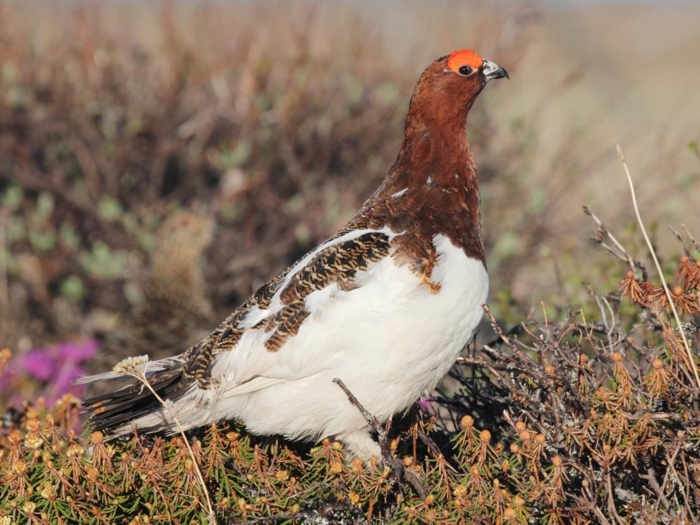
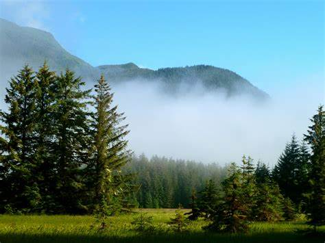

The largest state (in the area) of the United States, Alaska was admitted to the union as the 49th state in 1959 and lies at the extreme northwest of the North American continent. Acquired by the United States in 1867, the territory was dubbed “Seward’s Folly” after U.S. Secretary of State William Seward, who arranged to purchase the land from Russia. Critics of the purchase believed that the land had nothing to offer, but the discovery of gold in the 1890s created a stampede of prospectors and settlers. Alaska is bounded by the Beaufort Sea and the Arctic Ocean to the north; Canada’s Yukon Territory and British Columbia province to the east; the Gulf of Alaska and the Pacific Ocean to the south; the Bering Strait and the Bering Sea to the west; and the Chukchi Sea to the northwest. The capital is Juneau.
| Date of Statehood | Capital | Population | Size |
|---|---|---|---|
| January 3, 1959 | Juneau | 736,081 | 663,268 square miles |
North to the Future
Willow Ptarmigan
Sitka Spruce
Interesting facts